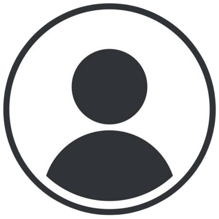

Nasza klinika stomatologiczna powstała w 1998 roku.
Od wielu lat przeprowadzamy leczenie i promujemy profilaktykę stomatologiczną, korzystając z
najnowocześniejszego sprzętu medycznego.
Mieszkańcy Gdyni mogą skorzystać z oferty doskonale wyposażonych gabinetów dentystycznych ze świetnym
zapleczem diagnostycznym.
Za najwyższą jakość naszych usług odpowiada doświadczony i wykwalifikowany personel oraz zespół lekarzy
składający się ze specjalistów stomatologii ogólnej i dziecięcej, chirurgii stomatologicznej, endodoncji,
ortodoncji, implantologii i protetyki.
Nasi stomatolodzy są członkami polskich towarzystw stomatologicznych. Dzięki kontaktom nawiązanych na sympozjach, spotkaniach towarzystw stomatologicznych oraz internetowych listach stomatologicznych skupiających światowej sławy stomatologów, możemy pomóc naszym pacjetom w każdym zakątku Polski. Dzięki wiedzy, doświadczeniu i wyszkoleniu personelu, a także przy pomocy nowoczesnego sprzętu i zaawansowanych technologii materiałowych jesteśmy w stanie zaoferować Państwu pełen zakres leczenia stomatologicznego w Centrum Medyczno-Stomatologicznym w Rumi. Pomaga nam w tym także aparatura diagnostyczna, w którą wyposażona jest Klinika. Klinika przygotowana jest do leczenia pacjentów niepełnosprawnych. Obiekt posiada przygotowany odpowiednio gabinet. Posiadamy specjalne podjazdy, odpowiednio przygotowaną poczekalnię i łazienki.
Nasi stomatolodzy są członkami polskich towarzystw stomatologicznych. Dzięki kontaktom nawiązanych na sympozjach, spotkaniach towarzystw stomatologicznych oraz internetowych listach stomatologicznych skupiających światowej sławy stomatologów, możemy pomóc naszym pacjetom w każdym zakątku Polski. Dzięki wiedzy, doświadczeniu i wyszkoleniu personelu, a także przy pomocy nowoczesnego sprzętu i zaawansowanych technologii materiałowych jesteśmy w stanie zaoferować Państwu pełen zakres leczenia stomatologicznego w Centrum Medyczno-Stomatologicznym w Rumi. Pomaga nam w tym także aparatura diagnostyczna, w którą wyposażona jest Klinika. Klinika przygotowana jest do leczenia pacjentów niepełnosprawnych. Obiekt posiada przygotowany odpowiednio gabinet. Posiadamy specjalne podjazdy, odpowiednio przygotowaną poczekalnię i łazienki.
Nasz Zespół

Tomasz Szydłowski - Specjalista Chirurgii Stomatologicznej
Lorenzo Skarpeta - Specjalista chirurgii stomatologicznej
Michał Kolanko - lekarz dentysta